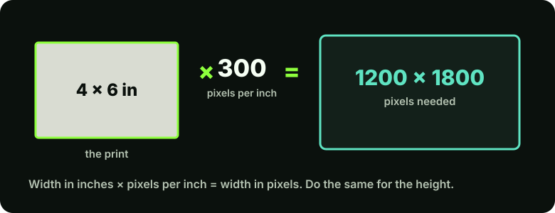

What resolution actually means
A digital photo is a grid of tiny squares called pixels. A photo that is 3000 pixels wide and 2000 pixels tall has 6,000,000 of them, which is where the figure "6 megapixels" comes from. That pixel count is the photo's real resolution. Everything else in this guide follows from it.
Two other terms cause most of the confusion:
- PPI (pixels per inch) describes how many pixels are packed into each inch when an image is displayed or printed at a particular size.
- DPI (dots per inch) strictly describes the dots of ink a printer lays down. In everyday use, and in many software dialogs, people say DPI when they mean PPI. For editing purposes you can treat them as the same thing.
The important point is that PPI is not stored in the pixels. It is a label that says "print this many pixels per inch", and it only means something once you decide on a print size.
The one calculation you need

Pixels needed = print size (inches) × PPI. A 4 × 6 inch print at 300 PPI needs 1200 × 1800 pixels. Going the other way, divide your pixel dimensions by the PPI you want to see how large you can print: a 3000 × 2000 photo at 300 PPI prints at 10 × 6.7 inches.
How many pixels for common print sizes
| Print size | At 150 PPI | At 300 PPI |
|---|---|---|
| 4 × 6 in | 600 × 900 | 1200 × 1800 |
| 5 × 7 in | 750 × 1050 | 1500 × 2100 |
| 8 × 10 in | 1200 × 1500 | 2400 × 3000 |
| A4 (8.27 × 11.69 in) | 1240 × 1754 | 2481 × 3507 |
Print labs and printers may quote their own recommended values, so check the lab's requirements before you order a large print.
Step by step: check and set size in Photoshop
In Photoshop
Open the photo and choose Image > Image Size (Ctrl+Alt+I, or Cmd+Option+I on Mac). Dialog layouts differ a little between versions.
- Read the pixel dimensions.
The Image Size dialog shows width and height in pixels. This is your photo's true resolution.
- Change print size without changing pixels.
Untick Resample. Now type 300 into Resolution and watch Width and Height (in inches) update. Nothing was added or removed; only the label changed. This tells you how large the photo can print at 300 PPI.
- Only resample if you must.
With Resample ticked, Photoshop makes new pixels or discards existing ones. Reducing size is usually safe. Enlarging invents pixels (see the next section).
- Work on a copy.
Resample a duplicate, not your master file. Use File > Save As with a new name.
Enlarging a photo: what is and is not possible
If a photo has too few pixels for the size you want, software can enlarge it by calculating new pixels between the existing ones. This is called resampling or upscaling. It can make an image smoother, and AI-based tools can add plausible-looking texture, but none of them can recover detail that was never captured.
Limits to be aware of
Upscaling does not turn a small, blurry photo into a sharp large one. AI upscalers produce invented detail, which can alter faces and fine patterns. For family photos, compare the result with the original, as described in the AI vs manual editing guide.
It is better to start with enough pixels. If you are scanning a print, see the scanning guide for how to capture the most detail.
What about "72 DPI for the web"?
You will often read that web images must be 72 DPI. This is a myth. Browsers display an image according to its pixel dimensions; the PPI value stored in the file is ignored. A 1200 × 800 pixel image looks identical on a web page whether it is labelled 72 or 300 PPI. What matters for the web is pixel size and file size: use dimensions near what the page actually displays, and a sensible JPEG quality (see the format guide).
Common mistakes
- Raising the PPI number and expecting more detail. With Resample off, the pixels do not change. With Resample on, you are guessing new pixels.
- Judging by file size. A large file is not necessarily high resolution; it can be heavily compressed or padded. Check the pixel dimensions.
- Using a screenshot or a messaging-app copy. Social and chat apps usually shrink photos. Ask for the original file.
- Ordering a print from a thumbnail. Compare your pixel width with the table above before ordering.
Key takeaways
- Resolution is the pixel count. PPI only matters once you pick a print size.
- Pixels needed = inches × PPI. 300 PPI is a common target for close viewing.
- Turning Resample off changes the label, not the picture.
- Upscaling cannot recover lost detail. Scan or shoot with enough pixels to start.
- For the web, pixel dimensions matter; the stored DPI value does not.
Next, learn which file format to save in.